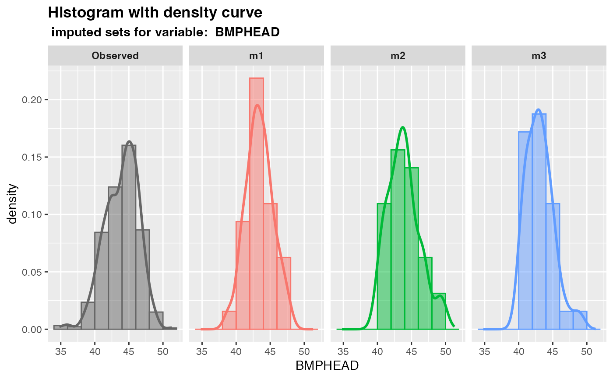

Overlay density plots for multiply imputed values for a single numeric variable
Source:R/plot_1var.R
plot_density.RdPlot overlay density curves of observed values versus m sets of imputed values for a specified numeric variable using ggplot2.
Arguments
- imputation.list
A list of
mimputed datasets returned by themixgbimputer, or other package.- var.name
The name of a numeric variable of interest.
- original.data
The original data with missing values.
- true.data
The true data without missing values. This is generally unknown in practice. If the true data is known (e.g., in cases where it is generated by simulation), it can be specified in this argument. The output will then have an extra panel called
MaskedTrue, which shows values originally observed but intentionally made missing.- color.pal
A vector of hex color codes for the observed and m sets of imputed values panels. The vector should be of length
m+1. Default: NULL (use "gray40" for the observed panel, use ggplot2 default colors for other panels.)
Examples
# obtain m multiply datasets
params <- list(max_depth = 3, subsample = 0.8, nthread = 2)
imputed.data <- mixgb(data = nhanes3, m = 3, xgb.params = params, nrounds = 30)
# plot the multiply imputed values for variable "BMPHEAD"
plot_hist(
imputation.list = imputed.data, var.name = "BMPHEAD",
original.data = nhanes3
)
